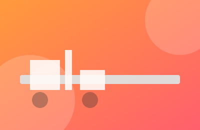

InfrastrukturaPočela rekonstrukcija glavne saobraćajnice kroz centar Surčina
Radovi obuhvataju novi asfaltni sloj, proširenje trotoara i uvođenje LED javne rasvete na deonici dugoj 1,8 km. Saobraćaj je preusmeren na alternativne pravce.
Pročitaj više